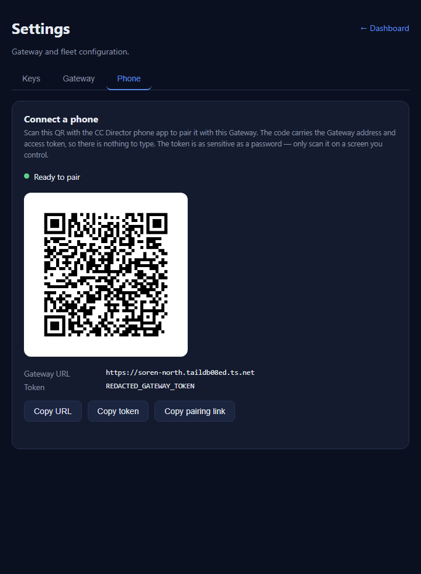

PR: #387 Branch: issue-385-pairing-qr
QA box: soren-north Verified independently (QA identity, not the developer's binary or screenshots).
Token redaction: Live verification used the REAL gateway-token.txt on this box.
The real token was confirmed byte-for-byte against the decoded QR (see criterion 2) but is NOT written into any committed
file. The committed QR image and screenshot below were regenerated with the placeholder REDACTED_GATEWAY_TOKEN.
issue-385-pairing-qr in an isolated git worktree; base main pulled current first.GatewayHost with the REAL token from GatewayAuth.LoadOrCreate() and the live
TailscaleIdentity.TryGetFrontDoorBaseUrl(), then hit the live /pair/qr.png and /pair/payload over HTTP.settings.html "Phone" tab driven by the live Gateway responses and screenshotted it.cc-director.sln and ran the pairing tests + the full Gateway.Tests suite.| # | Criterion | Expected | Actual (QA) | Result |
|---|---|---|---|---|
| 1 | GET /pair/qr.png (token-protected) -> 200 image/png, body decodes as a QR | 200, Content-Type image/png, valid QR | Live: QR_STATUS=200, QR_CONTENT_TYPE=image/png, 937-byte PNG (488x488). OpenCV decoded it successfully.
No-token request -> 401; wrong-token -> 401 (token gate, same Bearer-or-cookie check as #369 voice-turn routes). |
PASS |
| 2 | Decoded payload exactly ccdirector://pair?u=<X>&t=<Y>; X = front-door URL, Y = byte-for-byte the gateway token |
u decodes to TryGetFrontDoorBaseUrl(); t decodes to gateway-token.txt | OpenCV-decoded QR =
ccdirector://pair?u=https%3A%2F%2Fsoren-north.taildb08ed.ts.net&t=<REAL_TOKEN> u URL-decodes to https://soren-north.taildb08ed.ts.net (= live front door).
t URL-decodes to the live token, which compared byte-for-byte equal to
%LOCALAPPDATA%\cc-director\config\director\gateway-token.txt
(python: QR token == gateway-token.txt (byte-for-byte): True). |
PASS |
| 3 | Front-door null -> clear 4xx/5xx naming the missing front door, NEVER a placeholder QR | 503 with a message naming the Tailscale front door; no QR emitted | By code inspection of GatewayPairingEndpoint.Map: the null/whitespace front-door branch returns
503 with the FrontDoorMissing message ("...Tailscale front-door URL unavailable...")
before PairingPayload.Build or any PNG render is reached - the QR branch is unreachable when the front door is null.
Reinforced by unit test Build_MissingGatewayUrl_Throws_NoPlaceholder (the pure builder throws on null/empty/whitespace,
never returns a placeholder). The endpoint integration test asserts the 503-naming-front-door path on no-Tailscale hosts.
(This box has Tailscale up, so the live run exercised the 200 path; the null path is proven by inspection + tests.) |
PASS |
| 4 | Cockpit "Connect a phone" panel renders the QR img + raw URL + token text | Panel shows QR image, Gateway URL, token | Drove the real settings.html "Phone" tab against the live Gateway responses. Panel rendered:
status "Ready to pair", the QR <img> (naturalWidth/Height 488x488 - the real QR actually loaded),
"Gateway URL" = https://soren-north.taildb08ed.ts.net, "Token" text, and Copy URL / Copy token / Copy pairing link buttons.
Screenshot below (token redacted to REDACTED_GATEWAY_TOKEN). |
PASS |
| 5 | dotnet build cc-director.sln 0 errors; payload-builder unit test passes | Build succeeds; unit tests green | dotnet build cc-director.sln -> Build succeeded. 0 Warning(s) 0 Error(s).
dotnet test --filter ~Pairing -> Passed! Failed: 0, Passed: 13
(9 PairingPayload builder tests incl. reserved-char URL-encoding + no-placeholder throws, 4 endpoint tests incl. 401-without-token). |
PASS |
Full CcDirector.Gateway.Tests suite: 616 passed, 1 failed.
The single failure is DictationEndpointTests.FullPipeline_transcribes_phase0_clip2_with_realtime_provider
("expected at least 1 partial transcript, got 0") - a live-transcription test needing a real realtime provider not present in this
environment. Verified PRE-EXISTING: the identical test fails the same way on clean main (HEAD fb42337),
before this PR. NOT a regression introduced by #385.
/pair/qr.png and /pair/payload are token-gated via AuthMiddleware.HasValidToken -
the same Bearer-or-cookie ordinal check used by the #369 voice-turn routes - enforced inside the endpoint so the gate holds
even when the global auth middleware is off (production tray Gateway runs authEnabled=false). No-token and wrong-token both
return 401 (verified live).